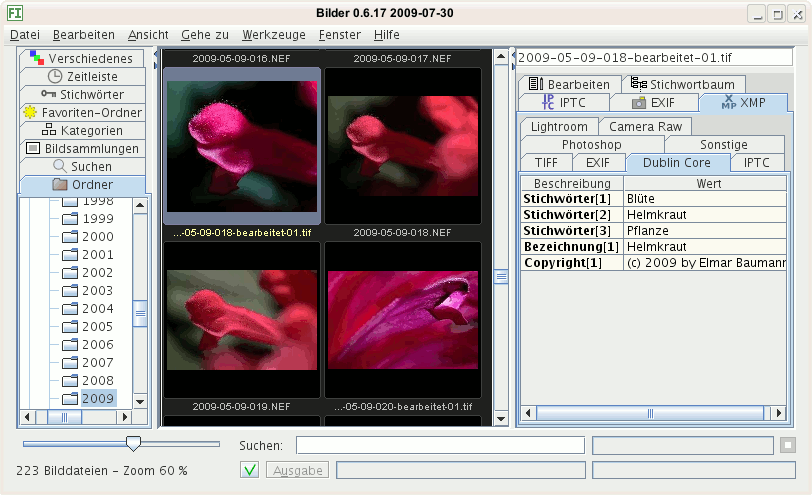
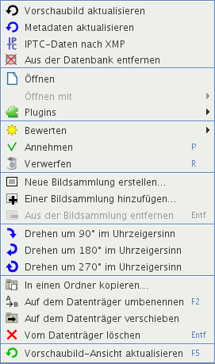

Das Programmfenster ist aufgeteilt in vier Bereiche:

Alle Befehle gelten für eine Auswahl, werden nur auf diese angewendet. Die Vorschaubilder in der Mitte können Sie mit der Maus auswählen:
Mit dem Regler unten links können Sie die Größe der Vorschaubilder einstellen zwischen 10 % und 100 % der eingelesenen Größe in Schritten von 10 %. Gute Qualität erzielen Sie, wenn Sie die Vorschaubilder groß einlesen lassen und für mehr Übersicht verkleinern.

Die Fortschrittsanzeigen verdeutlichen, wie weit bestimmte Aufgaben erledigt sind. Die rechte obere zeigt den Fortschritt automatisierter Aufgaben an, die darunter, was Sie veranlassten, beispielsweise das Drehen von Vorschaubildern, und die linke, wie weit die Vorschaubilder der Fenstermitte in die Datenbank eingelesen wurden.
Sie können in das Eingabefeld am unteren Fensterrand einen Suchtext eingeben. Nachdem Sie die Enter-Taste (Return) gedrückt haben, wird nach dem Text gesucht, den Sie eingegeben haben. Ihre Eingaben werden automatisch vervollständigt anhand gepseicherter Metadaten. Tipp: Mit der Tastenkombination Strg+F springen Sie schnell in das Suchen-Eingabefeld.
Die Schaltfläche mit dem grünen Häkchen links von Suchen öffnet die Protokolldatei. Dies kann wichtig sein, falls ein rotes Kreuz anzeigt wird anstelle des grünen Häkchens: Dann verlief etwas, wie es nicht sollte.
Die Schaltfläche Ausgabe öffnet ein Fenster mit den Texten, die von Bilder in die Ausgabe des Betriebssystems geschrieben wurden.
Klicken Sie mit der rechten Maustaste, klappen manchmal Kontextmenüs auf neben dem Mauszeiger und zeigen Optionen für das, was sie auswählten ("markierten") im aktiven Fenster. Bedingungen:
Sie wählen zuerst mit der linken Maustaste etwas aus und klicken dann die rechte. Unten sind zwei Kontextmenüs abgebildet.
Ist das Fenster mit den Vorschaubildern ausgewählt, wird das Kontextmenü für die Vorschaubilder angezeigt.

Kontextmenü im Fenster mit den Vorschaubildern
Ist das Fenster mit den gespeicherten Suchen ausgewählt, öffnet sich das Kontextmenü mit Aktionen für gespeicherte Suchen.

Kontextmenü im Fenster mit den gespeicherten Suchen